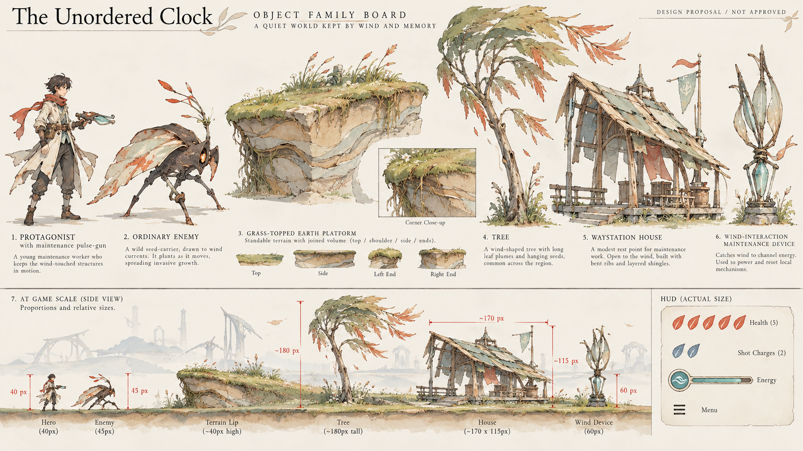

《失序之钟》四种艺术方向
全部是概念提案，尚未进入 Godot，也没有用户定稿。P2 与以前的 B「雨釉与偏心」不是同一方案。
按16:9视窗完整显示原图，无裁切或涂改。源图尺寸以 provenance.json 为准。图生仍有角色/房屋/平台锚点偏移；同一布局目标不等于像素精确复刻，更不等于真实碰撞验证。
打开画面原图打开对象图板原图设计说明与风险原始来源与派生关系
同方向对象、结构与 HUD
放大设计与游戏尺度条带只用于造型检查；图内“40px”等是生成的示意标签，不是测量报告。图内英文机制描述不是新玩法契约。

四画面并列